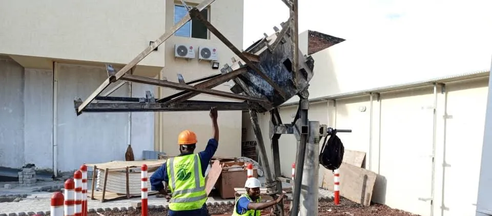
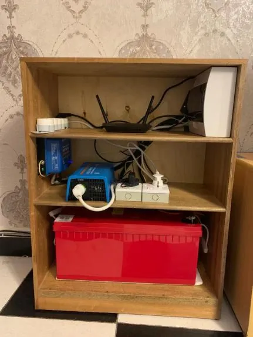
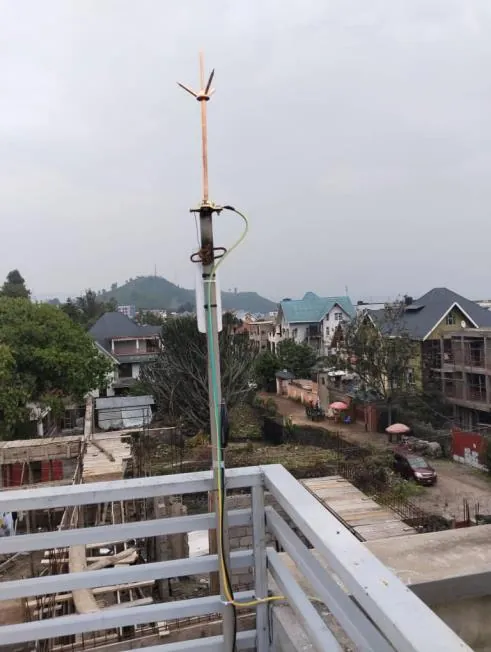

Continuer à travailler,même très loin de tout
Le service Business Continuity Plan d’IT CONSULTING SARL vise à vous permettre de rester connecté et opérationnel partout, y compris dans des zones très reculées, grâce à la technologie VSAT et à d’autres solutions.

Ce que propose IT CONSULTING
Service Business Continuity Plan
Un service destiné à permettre à ses clients de continuer à travailler partout, même dans les zones les plus isolées, grâce à la technologie VSAT et à d’autres solutions.
Connectivité VSAT
La liaison par satellite est la solution explicitement citée par le profil pour relier des sites éloignés.
Installation et mise en service
Les équipements d’émission-réception, d’alimentation et de réseau font partie des installations que la société réalise, comme le montrent les photographies de son profil.
Le profil ne détaille pas les autres solutions de connectivité auxquelles il est fait allusion (« VSAT et autres ») : elles se précisent avec la société, selon votre situation.

Assemblage du support d’une antenne parabolique
La connectivité comme assurance d’activité
Une coupure de liaison ou de courant n’arrête pas seulement des ordinateurs : elle arrête des équipes, des paiements, des suivis, parfois des opérations de sécurité.
C’est le sens d’un plan de continuité : savoir à l’avance ce qui doit continuer, quelle liaison de secours prend le relais, avec quelle alimentation, et vérifier que cela fonctionne avant d’en avoir besoin.
Le VSAT en bref
VSAT signifie Very Small Aperture Terminal : une petite station terrienne bidirectionnelle, composée d’une antenne parabolique (le plus souvent de 0,75 à 2,4 m de diamètre selon les usages) et d’un modem. Elle communique via un satellite géostationnaire avec une station centrale (hub) reliée à Internet ou au réseau de l’organisation.
Comme le satellite couvre de vastes zones, il n’est pas nécessaire de déployer d’infrastructure au sol jusqu’au site : c’est ce qui rend le VSAT adapté aux sites isolés — chantiers, zones minières, centres de santé, agences, sites techniques — et aux solutions de secours.
Points d’attention
Latence
Le trajet jusqu’à un satellite géostationnaire ajoute un délai incompressible, perceptible dans les applications interactives. Les applications doivent être choisies ou réglées en conséquence.
Conditions météo
Les fortes pluies peuvent dégrader le signal, surtout sur les bandes de fréquence élevées ; la marge de liaison est un paramètre de conception.
Installation de l’antenne
Il faut une vue dégagée vers le satellite, un support stable et un pointage précis.
Énergie
Un site isolé a besoin d’une alimentation fiable : onduleur, batteries, parfois énergie solaire.
Capacité et coût
La bande passante est partagée et facturée selon des forfaits : dimensionner selon les usages réels.
Sur le terrain
Photographies extraites du profil de l’entreprise.


Bâtir un plan de continuité
Deux référentiels reconnus structurent la démarche. La norme ISO 22301 (seconde édition, 2019) spécifie les exigences d’un système de management de la continuité d’activité : analyse d’impact sur l’activité, plans de continuité, exercices à intervalles planifiés, audit interne et amélioration continue. Le guide NIST SP 800-34 décrit, pour les systèmes d’information, un processus en sept étapes : politique de planification, analyse d’impact, mesures préventives, stratégies de reprise, plan de contingence, tests et formation, maintenance du plan.
Deux indicateurs reviennent partout : le RTO (durée maximale d’interruption acceptable) et le RPO (perte de données maximale acceptable). Ils déterminent le niveau de redondance à payer : liaison de secours, énergie, sauvegarde, site alternatif.
Ces référentiels sont cités comme repères généraux ; IT CONSULTING SARL n’indique pas dans son profil être certifiée ou conforme à l’un d’eux.
Déroulé type
Information générale sur la mise en place d’une connectivité de secours.
Analyser l’impact
Quelles activités ne peuvent pas s’arrêter ? Pendant combien de temps ?
Choisir les liaisons
VSAT, liaison terrestre, radio, mobile : seul ou en combinaison, avec bascule.
Sécuriser l’énergie
Onduleur, batteries, protection contre la foudre et les surtensions.
Installer et configurer
Antenne, modem, réseau local, routage, sécurité des échanges.
Tester régulièrement
Simuler une panne, mesurer la bascule, corriger, documenter.
Questions fréquentes
Un plan de continuité, est-ce seulement de l’informatique ?
Non. Le plan de continuité d’activité couvre l’ensemble de l’organisation (personnes, locaux, fournisseurs, processus). Le volet informatique et télécom en est une composante essentielle, parfois appelée plan de contingence ou de reprise après sinistre.
VSAT ou fibre ?
La fibre offre une latence et un débit supérieurs là où elle existe. Le VSAT est utile lorsqu’aucune liaison terrestre n’est disponible ou comme secours indépendant d’un réseau terrestre. Beaucoup d’organisations combinent les deux.
Le VSAT convient-il à la visioconférence ?
Oui, selon le dimensionnement de la liaison et le réglage des outils ; la latence reste perceptible. Il faut le vérifier lors d’un essai avec les applications réellement utilisées.
Comment s’assurer que le secours fonctionnera le jour J ?
En le testant à intervalles réguliers, en simulant des pannes réelles, en documentant la procédure et en formant les personnes qui devront l’appliquer.
Quelle autonomie électrique prévoir ?
Elle se calcule à partir de la consommation des équipements critiques et de la durée maximale de coupure à couvrir. Les batteries vieillissent : leur état doit être contrôlé périodiquement.
Ces réponses sont des informations pédagogiques générales ; elles ne constituent ni une garantie ni un engagement de service. Les prestations réellement proposées sont celles décrites dans la section « Selon le profil de l’entreprise » et précisées lors du devis.
À lire aussi

Réseaux et télécommunications
Conception de réseaux LAN, MAN, PAN et WAN, installations wireless, transmission et maintenance des serveurs.
Découvrir
Sécurité électronique
CCTV, alarmes, détecteurs de mouvement et de présence : installation, configuration et maintenance.
Découvrir
Génie civil : construction de pylônes
Construction de pylônes de télécommunication, de la fondation à la tour.
DécouvrirRester connecté, quoi qu’il arrive
Décrivez vos sites, leur isolement et ce qui ne doit jamais s’arrêter.